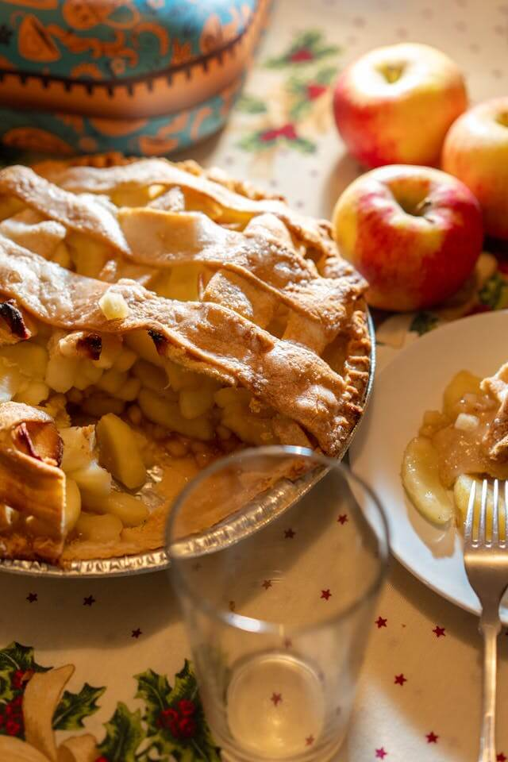
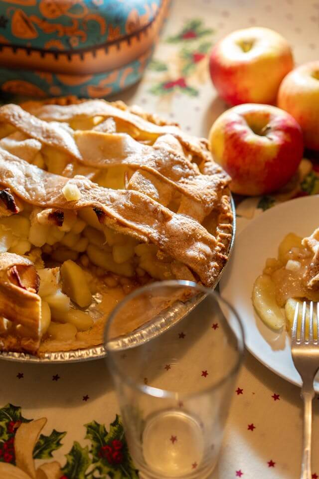

Compra Supermercado
Lista de compra: pie de manzana
- Para la masa:
- harina
- sal
- azucar
- mantequilla
- Para el relleno:
- manzanas
- azucar
- azucar morena
- canela molida
- jugo de limon
- mantequilla
- Para darle un toque especial:
- un huevo batido
- azucar glass
Lista de compra: pie de manzana
